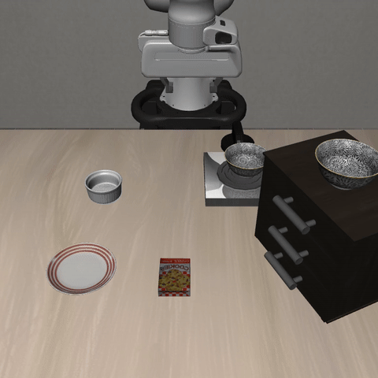

Robot learning01
DinoFlow
Connecting DINOv3 visual features to robot actions with conditional flow matching.
Three camera views↓DINOv3 + LoRA↓Action DiT↓50 steps × 26 action dimensions
PyTorch / LeRobot / Flow MatchingView DinoFlow
TIANHONG WANG · PERSONAL PORTFOLIO
I'm Tianhong Wang, a first-year PhD student in Artificial Intelligence at Westlake University. I explore robot learning, world models, and AI tools built for everyday use.
WESTLAKE Department of Artificial Intelligence

01 / SELECTED WORK
Connecting DINOv3 visual features to robot actions with conditional flow matching.
A small, complete GPT in pure PyTorch. From attention to pretraining, supervised fine-tuning, and text generation.
A conversational, local-first knowledge base. Markdown for storage, semantic and full-text search for retrieval, and Obsidian for connected thinking.
IN THE SIMULATOR
Exploring how a vision-language-action model translates instructions into robot behavior. A recorded grasping example from my OpenVLA reproduction work.
Explore the OpenVLA repository
VISION · LANGUAGE · ACTION02 / PROJECT INDEX
11 public repositories
A DINOv3 and conditional flow-matching policy with three-camera input, LeRobot data loading, training, and inference serving.
Reproducing a vision-language-action model, with LoRA fine-tuning, LIBERO simulation experiments, and quantized deployment.
A LeWorldModel-based repository exploring JEPA world models for visuo-tactile action planning. The original model and paper belong to the upstream authors.
A compact GPT in pure PyTorch, covering byte-level tokenization, pretraining, supervised fine-tuning, and text generation.
Step-by-step implementations spanning PyTorch fundamentals, Transformers, diffusion, reinforcement learning, robot policies, and agent loops.
A macOS desktop companion with voice conversations, visual understanding, pixel expressions, long-term memory, and a local context console.
A Markdown-first knowledge template combining Claude Code, BGE-M3 semantic retrieval, SQLite full-text search, and Obsidian.
Structured interpretations of AI news and paper abstracts, with follow-up questions and a FastAPI backend.
The TBCRM project repository. Its public README currently provides a basic project introduction and identifies dev as the development branch.
A collection of robotics and embodied AI papers, organized by conference and paper category for research discovery.
An upstream reading collection on large language and multimodal models for robotics and reinforcement learning.
Curated from public repositories and READMEs · Snapshot: October 8, 2026 · Adaptations and reading collections are labeled.
03 / BACKGROUND
Autonomous System
Velocity Estimation
Alongside my studies at KIT, I joined KA-RaceIng in 2024, contributing to velocity estimation in the Formula Student team's Autonomous System subteam.
04 / ABOUT
Tianhong Wang / Nolan
I am a first-year PhD student in the Department of Artificial Intelligence at Westlake University, with a master's degree from KIT and a bachelor's degree from China University of Mining and Technology.
My projects explore how robots learn actions from visual observations, how models represent the world, and how AI can support everyday knowledge and interaction.
From implementing Transformers to exploring robot policies and building local AI tools, I learn by making ideas concrete.
Find me on GitHub